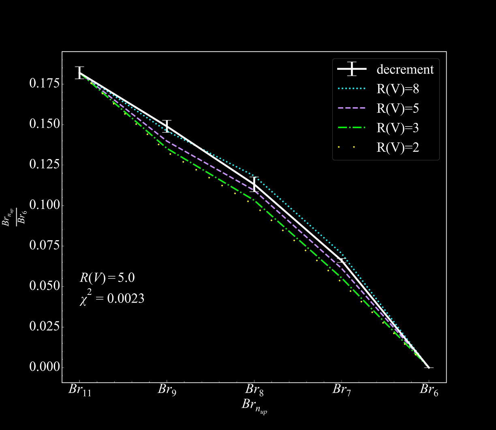

Spectral characterisation of the extinction properties of NGC 3603.
In this study, we used the Brackett recombination lines from our NIRSpec nebular spectra in order to measure the extinction towards NGC 3603. The measured line ratios deviate from their theoretical value due to extinction. This enabled our determination of the absolute extinction A(V), along with the often more elusive total-to-selective extinction ratio R(V).
Read paper